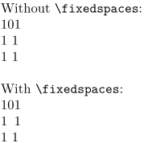

Syntax (autogenerated)
| \fixedspaces |
Syntax
| \fixedspaces |
Description
A switch; makes the non-breaking space created with the tilde ~ have the same width as the glyph for the numeral zero (0) in the current font
Example
-
Without \tex{fixedspaces}:\crlf 101\crlf 1~1\crlf 1 1\crlf \fixedspaces With \tex{fixedspaces}:\crlf 101\crlf 1~1\crlf 1 1
- 
See also
Help from ConTeXt-Mailinglist/Forum
All issues with: